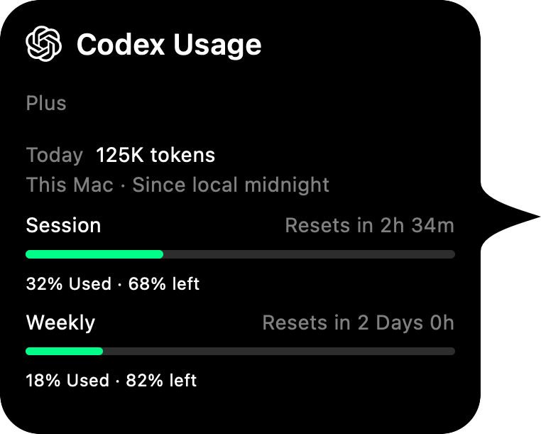

확인은 짧게. 몰입은 길게.
코딩의 흐름은 그대로.
사용량은 한눈에.
AI 도구의 사용 한도부터 다음 초기화 시간까지.
화면 가장자리에서 가볍게 확인하세요.
확인하는 시간보다, 만드는 시간.
사용 한도부터 토큰 기록까지.
지금 필요한 정보를 한눈에.
남은 한도, 토큰 분석, 계정 전환과 작업 상태까지.
작업에 필요한 기능을 한곳에서 확인하세요.
01–02 / 07
로컬 토큰 기록은 계정 구분 없이 이 기기의 세션을 집계합니다. 제공자의 사용 한도는 연결한 계정 기준으로 표시합니다.
함께 쓰는 도구를 한곳에
70개의 제공자.
하나의 작은 공간.
매일 쓰는 코딩 도우미부터 새롭게 연결한 API까지.
필요한 도구를 추가하고, 각 제공자의 연결 안내를 확인하세요.
일치하는 도구가 없습니다. 다른 이름으로 검색해 보세요.
표시 항목은 제공자·계정·요금제에 따라 다릅니다. 로컬 토큰 기록은 Codex와 Claude Code에서 지원하며, Windows 미리보기의 지원 범위는 별도 안내를 확인하세요.
coderim — terminal
CodeRim CLI 한도 조회 출력 예시입니다.
작업하는 곳, 어디에서나
터미널에서도.
익숙한 방식 그대로.
앱에 포함된 CLI로 최근 사용량을 확인하세요. 텍스트와 JSON 출력, 주기적 표시를 지원합니다. 최신 값이 필요할 때는 CodeRim을 실행해 두세요.
CLI 사용 안내작은 설정, 더 편안한 작업.
시작은 세 단계면 충분해요.
설치하고, 연결하고, 하던 작업으로 돌아가세요.
다음 아이디어를 위한 작은 여유
작업의 가장자리에, CodeRim.
무료로 사용하고, 누구나 함께 만들어갑니다.
Mac에 자연스럽게 어울리는 앱.
macOS 14+ · Apple Silicon 및 Intel · v2.1.13
또는 Homebrew로 설치
brew tap dlfkdLR/tap && brew install --cask dlfkdLR/tap/coderimmacOS 앱은 임시 서명되어 있으며 Apple 공증을 받지 않았습니다. 다운로드를 검증하고 첫 실행 안내를 따라주세요.
Windows에서도 익숙한 작은 공간.
Windows 11 · x64 및 ARM64 · v2.1.14 미리보기
Intel·AMD PC는 x64, ARM 기반 PC는 ARM64를 선택하세요. 해당 MSI를 설치한 뒤 Settings에서 제공자를 연결하세요. 필요한 런타임은 포함되어 있습니다.
Windows 미리보기는 인증·업데이트 방식과 지원 범위에 차이가 있으며 위젯은 제공하지 않습니다. 설치 전 릴리스의 검증 파일과 기능 안내를 확인하세요.
소스를 공개하고, 세심하게 만들어갑니다.소스 코드 보기 →
무료로 사용할 수 있나요?
네. CodeRim은 MIT 라이선스로 공개된 무료 오픈 소스 앱입니다. 각 제공자의 구독료와 API 사용료는 해당 요금제를 따릅니다.
어떤 데이터를 저장하나요?
로컬 사용량 DB에는 집계 수치와 시간·모델 ID 등 기록에 필요한 메타데이터를 저장합니다. 프롬프트, 응답, 소스 코드와 전체 프로젝트 경로는 저장하지 않습니다. 제공자 인증 정보는 별도의 로컬 보안 저장소에 보관하며, 조회 요청은 해당 서비스로 전송합니다.
개인정보 안내 보기 →토큰 기록과 계정 사용 한도는 같은 값인가요?
각기 다른 기준의 값입니다. Codex·Claude Code 로컬 토큰 기록은 계정 구분 없이 이 기기에 저장된 세션을 집계하며, 다른 기기에만 있는 기록은 포함하지 않습니다. 제공자의 사용 한도는 연결한 계정의 할당량입니다. CodeRim은 두 값을 구분해 표시합니다.
제공자를 추가하면 바로 로그인되나요?
제공자 추가와 로그인은 별도입니다. 기존 도구의 로컬 로그인을 재사용하거나 API 키, 세션, 엔드포인트와 지역 설정이 필요할 수 있습니다. 각 제공자의 연결 안내를 따라주세요. 추가한 제공자만 모니터링합니다.
Windows도 모든 기능이 똑같이 동작하나요?
Windows는 트레이, 설정, 노치, 로컬 기록과 CLI를 제공하는 구현 미리보기입니다. 인증, 업데이트와 일부 제공자 기능에는 차이가 있고 Windows 위젯은 지원 범위에서 제외됩니다. 현재 제한 사항은 기능 안내를 확인하세요.
Windows 기능 안내 →